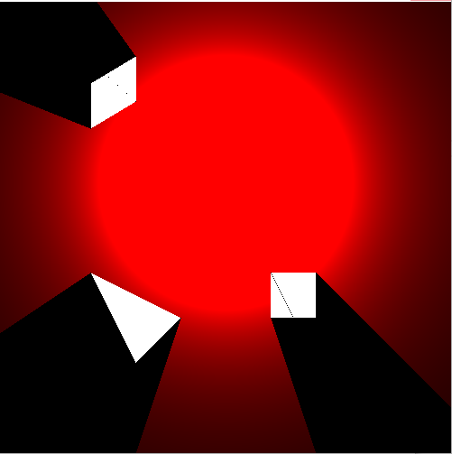
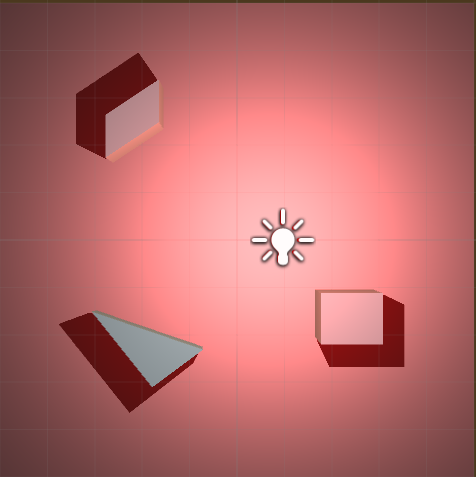
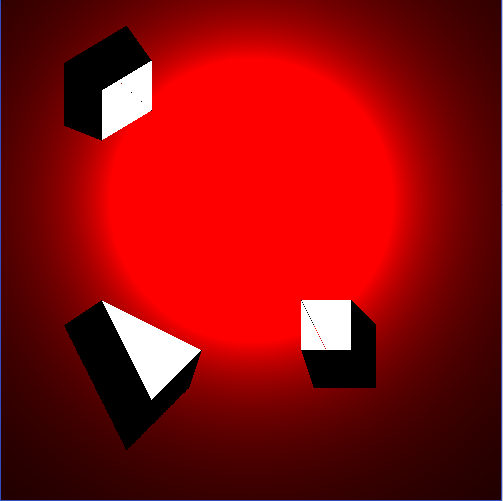

The goal of Fash Shadow is to provide a simple and fast realtime shadow solution for top-down 2D or 2.5D games like Crimsonland. It is used to
create an illusion that the object is in 3D space through 2D shadows.
Fast Shadow can achieve much similar result as 3D shadow while keep computing time at 2D level.
Technical Features:
Fast Shadow creates the illusion of 3D shadow by changing the way of 2D shadow is calculated.
Traditional 2D shadow:

3D shadow in 3D game engine:

Fash Shadow solution:

Fast Shadow uses the unique technique I created called "neighbor pixel assumption" based on the continuity feature of shadow.
This technique can increase the algorithm's speed by up to 100% !